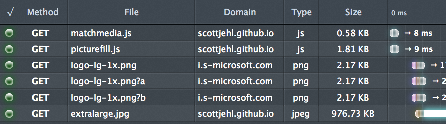

Responsive Images:
ain't we there yet?
Oh, hai!
Are we there yet?
no... but close...
eeer.
Who cares?
We do!

responsiveimages.org
Why do we care?
- Mat Marquis
- ...
- Steve Souders
- Images constitute +60%.

What are
responsive images?
Images (co)respond to the environment.
Use Cases
Stretchy images

Device Pixel Ratio
Viewport selection
Art Direction

Other use cases
- File format support - Webp, Anyone?
- Print and e-ink
usecases.responsiveimages.org
The developer's glass ceiling
- Reliance on divs.
- Bypass preload scanner
- Reliance on server-side.
Quick example: picturefill
microsoft.com

microsoft.com
<div data-picture data-alt="Microsoft">
<div data-src="logo-type-1x.png"></div>
<div data-src="logo-type-2x.png"
data-media="(min-device-pixel-ratio: 2.0)">
</div>
<noscript>
<img src="logo-type-1x.png" alt="Microsoft" />
</noscript>
</div>
Pre-fetching

Proposed solutions
- srcset
- picture
- Client Hints
- Respimg syntax
- Responsive Image Container
<img src width height alt >
<img src="some/image">
Picture
Example
The good
The bad
The ugly
srcset
Example
The good
- Automatically resizes images to DPR.
The bad
- What the hell does "w" mean? "h"?
The ugly
What if I told you...

You don't need a microsyntax.
<img src="some/image">
Client Hints
Example
The good
The bad
The ugly
Yeah, it's all pretty much fucked.
Drawing board
<picture width="" height="" src="foo.png"> <source media="(min-width: 300px)" srcset="small.jpg 1x, big.jpg 2x"> <source media="(min-width: 600px)" srcset="med.jpg 1x, large.jpg 2x"> <img src="small.jpg" alt="why is it so difficult?"> </picture>
BOOM!
Respimg syntax
Respimg syntax
<src-n-attribute> = <media-query>? [ <x-based-urls> | <viewport-urls> ]
Example
<img src-1="(max-width: 400px) pic-small.jpg"
src-2="(max-width: 1000px) pic-medium.jpg"
src="pic-large.jpg"
alt="Obama talking to a soldier in hospital scrubs.">

The good
The bad
The ugly
But wait...

If the browser knows everything...
Responsive Image
Container

How does it work?
- File format approach
- A "layer" per resolution
- Both resolution switching and art-direction

Resolution switching

(8kb)
Delta 1 (+5kb)

Delta 2 (+8kb)

Delta 3

Art direction

200x200

400x288

770x512
Composite - 770x512px


The good
- Markup left untouched
- A single file per image
- Better for post-download dimensions changes
The bad
- Touches many layers. Will take time
- Decoding performance???
- Fetching mechanism network performance???
Responsive Image Format
What can you do today?
Compress your images (d'uh!)
Compressive images
Secret Recipe
- Take full size image.
- Set compression to 0.
- set it in place and let the browser resize it.
- Adjust size - got to step 1.
Side by side

Picturefill
x-picture
Join the RICG
Thanks!
- Shout out to Yoav Weiss for the RIC images.
- marcos@marcosc.com
- @marcosc
- marcosc.com
- Glass ceiling - K Gillett